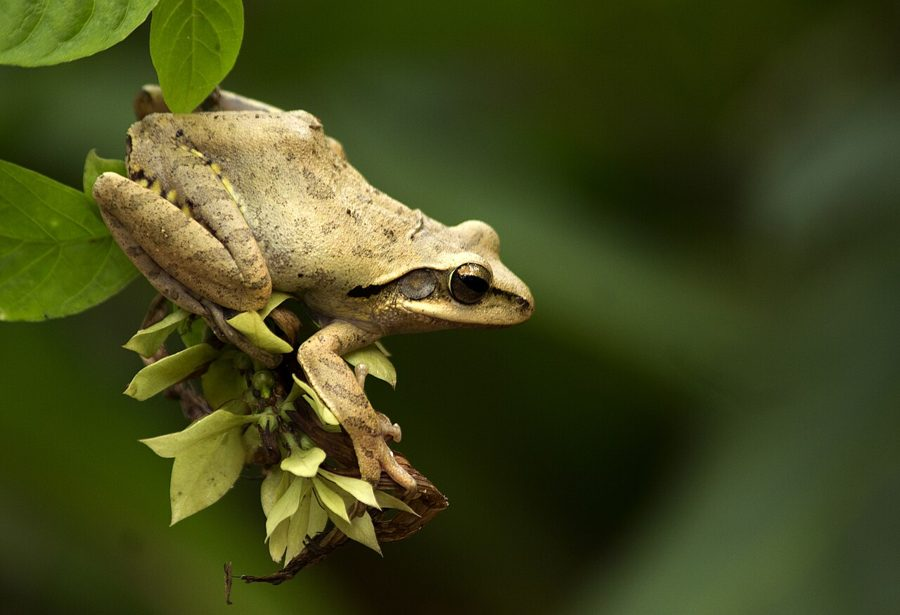

पेड़ मेंढकIndian Tree Frog
Polypedates maculatus · Rhacophoridae · AMP-0004

- Scientific name
- Polypedates maculatus (Gray, 1830)
- Family
- Rhacophoridae
- Hindi
- पेड़ मेंढक
- Status here
- native
- IUCN
- LC
When to look कब देखें
Present all year.
पेड़ मेंढक / Indian Tree Frog
Polypedates maculatus (Gray, 1830) — Rhacophoridae
पेड़ मेंढक — पूर्वी उत्तर प्रदेश के बगीचों, केले के बागानों और ग्रामीण घरों की छतों के आसपास पाया जाने वाला एक मध्यम आकार का आकर्षक मेंढक। यह पेड़ों और दीवारों पर चढ़ने की अपनी क्षमता के लिए जाना जाता है, जो इसकी उंगलियों के सिरों पर स्थित चिपकने वाले पैड (adhesive pads) की मदद से संभव होता है। इसके शरीर का रंग मटमैला पीला या भूरा होता है जिस पर गहरे भूरे रंग के धब्बे होते हैं। यह मानसून के दौरान झाड़ियों में पत्तों पर लटकते हुए झाग के घोंसले (foam nests) बनाने और मच्छरों व अन्य हानिकारक कीटों का शिकार करने के लिए ग्रामीण पारिस्थितिकी तंत्र में महत्वपूर्ण है।
Quick Identification त्वरित पहचान
| Feature | Description |
|---|---|
| Form | Slender body with long, delicate limbs; fingers and toes end in expanded, rounded adhesive discs |
| Coloration | Pale yellow, sandy brown, or olive-grey; back marked with irregular dark brown spots or a hourglass pattern |
| Head | Pointed snout; large, prominent gold-colored eyes; a distinct dark band runs from snout to shoulder through tympanum |
| Skin | Smooth dorsally; granular on the belly and underside of thighs |
| Feet | Fingers with rudimentary webbing; toes are half-webbed; adhesive discs are prominent |
| Nesting | Lays eggs in a hanging, white, frothy foam nest attached to leaves or branches above water |
Field tip: Look for a slender, pale brown frog with large golden eyes resting on large leaves (like banana or colocasia) or bathroom walls. It is easily recognized by the round, flat discs on its finger tips and its ability to cling to vertical surfaces.
Morphology आकारिकी
| Measurement | Range |
|---|---|
| Snout-vent length (SVL) | 35–85 mm |
| Weight | 5–25 g |
Limbs and adhesive discs: The limbs are long and thin. The fingers and toes end in large, flat, circular adhesive discs (pads) that secrete a thin layer of mucus, allowing the frog to climb smooth leaves, trees, and house walls easily.
Color pattern: Highly variable dorsal coloration. The base color ranges from creamy white and sandy yellow to dark brown. The dorsal surface usually bears irregular dark brown or black spots, sometimes merging into an hourglass-like pattern on the head and shoulder.
Skin and structures: The skin of the back is completely smooth, while the belly has a granular texture. A fold of skin (supratympanic fold) runs from behind the eye over the tympanum (eardrum) to the shoulder.
Advertisement call विज्ञापन पुकार
During the breeding season, males assemble on vegetation near water bodies and produce a loud advertisement call to attract females.
- Call description: The call consists of a harsh, rapidly repeated rattling sound, resembling a series of dry clacks: "chack-chack-chack-chack" or a sudden "tuk-tuk-tuk".
- Acoustic features: The call has a dominant frequency range of approximately 1.2 to 2.0 kHz. It is delivered in short bursts, usually triggered by humidity changes or rainfall.
- Context: Males call from branches, reeds, or brick walls, typically 1 to 2 meters above seasonal ponds or waterlogged ditches.
Ecological Role पारिस्थितिक भूमिका
Insectivore. Polypedates maculatus is a nocturnal predator. It feeds on a wide range of flying and crawling insects, including mosquitoes, flies, moths, beetles, and termites. By hunting in home gardens and crop fields, it helps regulate insect populations.
Prey source. Adults and tadpoles serve as vital food sources for a variety of nocturnal predators, particularly tree-climbing snakes, birds, and small carnivorous mammals.
Arboreal link. Unlike terrestrial frogs, this species bridges the canopy and aquatic habitats, utilizing trees and shrubs for foraging and shelter, and seasonal water bodies for larval development.
Life Cycle / Phenology जीवन चक्र
- Active period: Active throughout the warm months, peaking during the monsoon (June–September) when breeding takes place. During the cold dry months (December–February), they shelter in dark, damp corners of houses or tree hollows.
- Foam nest construction: Breeding occurs on branches or vegetation hanging over water. The male and female produce a white, frothy fluid which they beat into a foam nest using their hind legs.
- Egg development: Eggs are deposited inside this foam nest, which protects them from drying out and from aquatic predators.
- Tadpole release: Within 3–4 days, the eggs hatch inside the foam. As the foam liquefies, the tadpoles drop directly into the water body below, where they undergo typical aquatic development, metamorphosing into froglets in 6–8 weeks.
Host Plants or Prey आहार
Dietary habits: Carnivorous (insectivorous).
- Adult food: Mosquitoes, flies, crickets (INS-0012), moths, caterpillars, and small spiders.
- Tadpole food: Algae, organic detritus, and microscopic aquatic organisms.
Predators / Natural Enemies शत्रु
- Reptiles — Tree snakes (Ahaetulla nasuta), Indian Cobra (REP-0005), and Common Krait (REP-0006).
- Birds — Coucals, Owls, and Egrets.
- Mammals — Domestic cats, civets, and mongooses (MAM-0002).
Agricultural / Human Relevance कृषि प्रासंगिकता
Natural pest control. They forage actively in banana orchards, vegetable gardens, and home gardens around village houses in Basti, consuming significant quantities of crop pests and mosquitoes.
Human habitation commensal. This species is highly tolerant of human presence. They are commonly found inside rural bathrooms, kitchens, and thatched roofs where they hide in damp crevices during the day and hunt insects attracted to household lights at night. They are harmless and considered a symbol of monsoon onset by villagers.
Expected Locally स्थानीय रूप से अपेक्षित
Not a field record. Written from published accounts for eastern Uttar Pradesh. No confirmed local sighting yet — if you have seen it, that is what the atlas needs.
अभी तक स्थानीय पुष्टि नहीं। यह विवरण प्रकाशित स्रोतों से है, किसी अवलोकन से नहीं।
Commonly seen in the residential areas and banana groves of Basti district. During the monsoon, their white foam nests—resembling clumps of spit or soap lather—are easily spotted hanging from branches of shrubs or grass stems over village ponds and drainage ditches. Their harsh clacking calls are a constant nighttime background sound during rainy July and August.
Distribution वितरण
Global range: Native to South Asia, including India, Sri Lanka, Nepal, Bhutan, and Bangladesh.
In India: Widespread across the plains, peninsular hills, and parts of northeastern India, up to 1,500 meters elevation.
In Uttar Pradesh: Distributed across all districts, particularly common in rural and forested zones of eastern and central UP.
In Basti district / eastern UP: Common resident in gardens, banana orchards, and rural homes.
Range notes: No significant range changes documented.
Research Questions शोध प्रश्न
Anyone can investigate these | कोई भी इन प्रश्नों की जाँच कर सकता है
- How long does a foam nest of the Indian Tree Frog persist in Basti under varying humidity conditions before liquefying and releasing tadpoles? / बस्ती में आर्द्रता की विभिन्न स्थितियों में पेड़ मेंढक का झाग वाला घोंसला पिघलने और टैडपोल छोड़ने से पहले कितने समय तक बना रहता है? — Observe foam nests daily and record structural changes.
- What species of trees or shrubs are most frequently chosen by tree frogs for building their foam nests in village ponds? / ग्रामीण तालाबों में पेड़ मेंढक अपने झाग वाले घोंसले बनाने के लिए किस प्रजाति के पेड़ों या झाड़ियों को सबसे अधिक चुनते हैं? — Document plant species and nest heights for 15 nests.
- Do tree frogs show a preference for hunting near household LED lights compared to yellow incandescent bulbs? — Compare frog counts near different types of lights over 10 nights.
- How do tree frogs survive the dry summer months (April-May) in Basti villages, and where do they hide? / पेड़ मेंढक बस्ती के गांवों में गर्मी के शुष्क महीनों (अप्रैल-मई) में कैसे जीवित रहते हैं, और वे कहाँ छिपते हैं? — Inspect damp residential corners and banana leaf bases during summer.
- What is the survival rate of tadpoles that fall into temporary puddles compared to permanent village ponds? — Monitor tadpole development in different water bodies.
Similar Species मिलती-जुलती प्रजातियाँ
| Species | How to tell apart | हिंदी |
|---|---|---|
| Polypedates teraiensis (Terai Tree Frog) | Slightly larger; has 6-10 faint longitudinal dark stripes on the back; found closer to the Nepal border | तराई पेड़ मेंढक — पीठ पर धारियाँ होती हैं |
| Euphlyctis cyanophlyctis (Skittering Frog) | Aquatic; lacks adhesive discs on fingers; eyes on top of the head; fully webbed toes | कूद मेंढक — पानी में रहता है, चिपचिपे पैड नहीं होते |
| Duttaphrynus melanostictus (Common Toad) | Land-dwelling; dry warty skin; short legs; lacks adhesive pads | सामान्य टोड — खुरदरी त्वचा, रेंगता है |
Field rule: Slender light brown body (35–85 mm), large eyes with horizontal pupils, fingers with flat rounded adhesive discs, and climbing habit on walls or banana plants identify Polypedates maculatus.
Taxonomy & Classification वर्गीकरण
Original description. John Edward Gray described the species as Hyla maculata in 1830 in his work Illustrations of Indian Zoology (Plate 82). The type locality is India. It was subsequently moved to the genus Polypedates Tschudi. The genus name Polypedates is derived from the Greek polys (many) and pedetes (jumper). The specific epithet maculatus means spotted in Latin, referring to the dark markings on the back.
Subspecies. Monotypic — no subspecies are currently recognised.
Family and order placement. Placed in the order Anura (frogs and toads), family Rhacophoridae (Old World tree frogs), subfamily Rhacophorinae.
Phylogenetic notes. Polypedates maculatus is a member of the widespread South Asian Polypedates clade. It shows close evolutionary relationships with Polypedates leucomystax (Four-lined Tree Frog) of Southeast Asia.
IUCN status rationale. Listed as Least Concern (LC) by the IUCN Red List. It is extremely common, adaptable to human habitats, and has large stable populations across its range.
Photo Gallery फोटो गैलरी
References संदर्भ
- Gray, J.E. (1830). Illustrations of Indian Zoology; Chiefly Selected from the Collection of Major-General Hardwicke, F.R.S.. Vol. 1. Adolphus Richter and Co., London, Pl. 82.
- Daniel, J.C. (2002). The Book of Indian Reptiles and Amphibians. Bombay Natural History Society, Mumbai.
- Dutta, S.K. (1997). Amphibians of India and Sri Lanka (Checklist and Bibliography). Odyssey Publishing House, Bhubaneswar.
- Chanda, S.K. (2002). Handbook — Indian Amphibians. Zoological Survey of India, Kolkata.
- GBIF Occurrence Data — Polypedates maculatus, India (2010–2025).
- Zoological Survey of India (ZSI) — Amphibian Fauna of Uttar Pradesh.
Source file: species/fauna/amphibians/indian_tree_frog.md